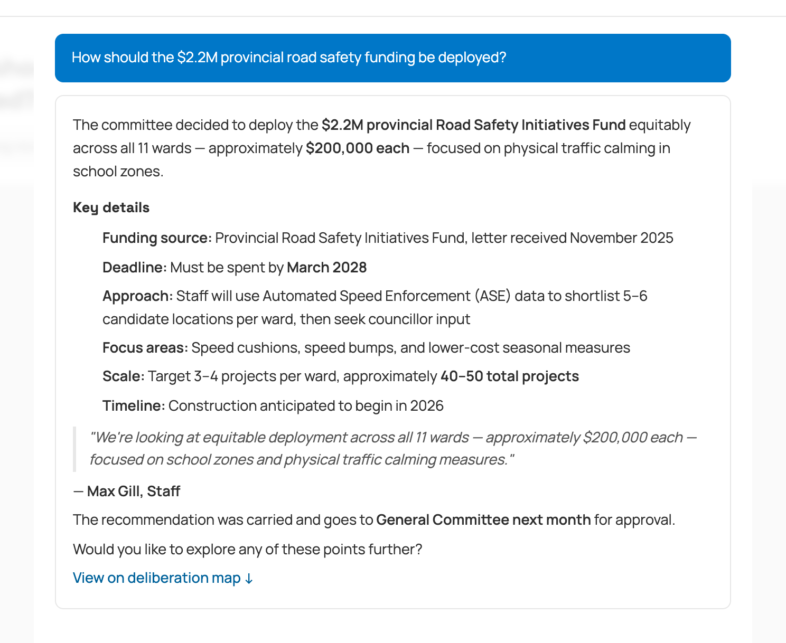
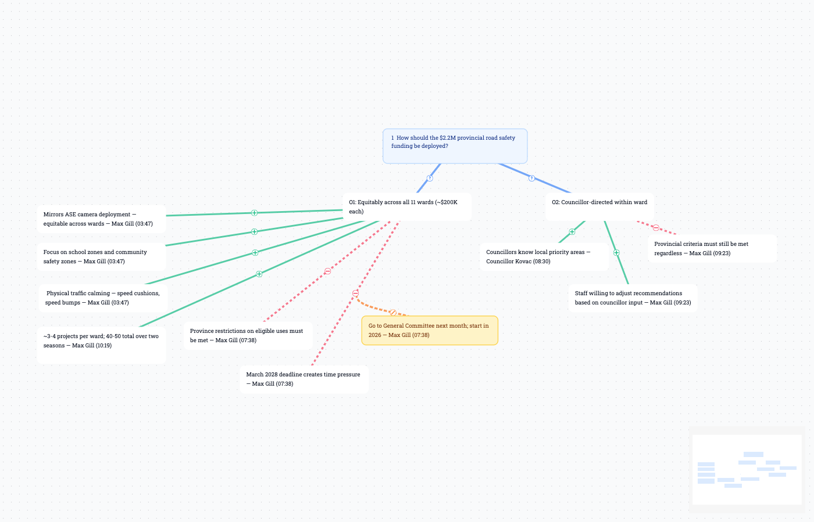

A search and explanation layer for municipal council records.
Almost every city says it wants residents engaged in how decisions get made. It's the aim behind public consultations, open-data portals, and livestreamed council meetings. But engagement depends on something more basic: before a resident can weigh in on what their city is doing, they have to be able to find out what their city is doing. Getting a citizen the information they need to understand what's going on is the step almost everything else rests on, and it's the one that tends to break down.
It has also become harder, even as cities publish more. Residents now expect to ask a question and get a clear answer assembled for them, the way they can almost everywhere else online, and municipal records don't work that way. To follow an issue in Mississauga today, a resident has to work through 1,280 meeting recordings and thousands of supporting documents, in whatever time is left over from a job and a family. Few people get far.
It shouldn't take that much effort. Take a resident worried about e-scooter use on their street.
A citizen concerned about e-scooter use should be able to ask what the city is doing and understand in seconds: what the initiatives are, what's been discussed, and what's being done about it.
That gives them the assurance that the issue is being addressed, and lets them confirm at a glance that the points they care about are on the record. If there are considerations that aren't being mentioned, they can reach out to the right council to collaborate in shaping the solution.
That last step is the important one. Engagement really begins when a resident moves from following an issue to having a hand in it, and most of what stands in the way is the work of finding out: the searching and reading and piecing-together that wears people down before they ever weigh in. When that work is easy, far more people are willing to do it.
This has been the goal of citizen engagement for a long time. The technology to deliver it only recently caught up.
Louie is the layer that makes that possible. It's a chat-based question-and-answer tool, accurate and inexpensive to run, and fast enough that residents will use it rather than abandon the search partway through.
It ingests a city's public council and committee materials and makes the whole record searchable at once. A resident finds the discussions, decisions, motions, and documents they're after just by asking. A plain question like "What decision was made by the Road Safety Committee on Friday?" returns an answer drawn from the record, on demand.
Every answer is citation-backed. Each one links to the transcript line, document section, or video timestamp it came from, so anyone can click through and check it against the source instead of taking it on trust. When the record doesn't hold an answer, Louie says so rather than inventing one. The point is to make a citable record usable, not to fill its gaps with guesses.

Some questions don't have a single answer. A big budget decision, a contested rezoning, a policy fight that runs across years and committees: these are arguments, and a useful answer has to show the rationale and the considerations, not just the outcome.
For a question like that, a resident shouldn't have to settle for the verdict alone. They should be able to take in the whole shape of it: the options that were weighed, the reasons offered on each side, the tradeoffs that gave people pause, and how the decision came together. That is what lets someone judge whether their own concern was heard, and decide whether it's worth raising.
Louie builds that view automatically, as a deliberation map. It lays out the options on the table, the case for and against each, and the compromises people proposed to bridge them, with every point traced back to the meeting where it was raised. A resident can see who proposed what, which objections came up, and where the discussion landed.
The maps draw on a long academic tradition of argument mapping, an idea people have found compelling for decades without ever making it practical. The same AI advances behind Louie's answers are what make the maps workable at the scale of a city. A companion whitepaper tells that story.

For most of local government's history, searching the record meant reading it, or paying a clerk to read it for you. The tools to do it well, at the scale and detail of a multi-year council record, did not exist.
In the last two years that changed. Language models can read and organize long stretches of deliberative material quickly, and they can be grounded in one city's record rather than in the internet at large. The grounding is the part that matters: the answers come from the city's own record, and they change when the record does.
To be exact, Louie is not trained on Mississauga's record in the machine-learning sense. The model underneath is general-purpose, the same one anyone can use. What's specific to Mississauga is simpler than training: when a question comes in, Louie looks up the relevant passages in the city's record and quotes them back accurately. That is why its answers stay current and can be checked against the source.
A few clarifications, since these are the questions that come up first.
It is not ChatGPT. ChatGPT doesn't have Mississauga's record, and even if it did, the answer would be diluted by everything else on the internet. Louie's attention is anchored to this city's record only.
It is not a replacement for eScribe. eScribe handles agenda packaging and meeting management. Louie sits on top of what eScribe publishes and makes it searchable in a way the publishing system itself was never designed to do.
It does not decide anything. Louie reads, retrieves, and cites. The city remains the authoritative source for every decision and every record. Louie's only job is to make that record findable.
Louie is built to sit alongside the systems the city already runs, not to replace or disrupt them.
The city retains ownership of its records and configuration data at all times.
The full pricing detail and commercial model are in the accompanying proposal.
A live demo of Louie running on the Mississauga record is available at louie.networkgoods.institute.
A 20-minute conversation can be booked at calendar.app.google/PeKe9ifG5jquHUia9.
Louie is currently under review with the City of Mississauga. Inquiries from other Ontario municipalities are welcome.